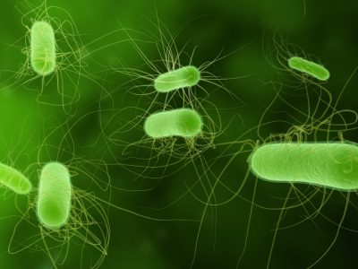

Mikrobiologische Therapie
Heilen mit Bakterien: eine Behandlungsform mit den Mikroorganismen, die mit dem Menschen in Symbiose leben.
Diese symbiotischen Kleinstlebewesen finden sich auf allen Schleimhäuten und verkörpern somit das menschliche Ökosystem. Die größten und stärksten Familien bewohnen den menschlichen Darm. Die Bakterienpopulationen aller Schleimhäute des menschlichen Organismus stehen untereinander in Wechselwirkung. Diese Tatsache nutzt man, um über die stärkste Gruppe, die Darmbakterien, das menschliche Ökosystem zu stabilisieren.
Die sogenannte mikrobiologische Therapie leitet sich aus der klassischen Mikrobiologie her. Lebende oder abgetötete Mikroben aus der Darmflora, deren Bestandteile und Probiotika werden oral oder parenteral verabreicht. Hinzu kommt die Anwendung von Autovaccinen – individuell angefertigte Eigenimpfstoffe.
Ziele der Therapie
- Immunregulation
- Modulation der Mikroflora aller Schleimhäute
- Modulation der Stoffwechselleistungen
Indikationsbereiche
- Atopische und entzündliche Hauterkrankungen
- Allergisch bedingte Erkrankungen
- Asthma
- Akute und chronische Erkrankungen der Atemwege
- Akute und chronische Infektionen des Urogenitaltraktes
- Pilzinfektionen
- Gastrointestinale Erkrankungen
- Rheumatische Erkrankungen
- Maligne Erkrankungen
Seit über 25 Jahren stehe ich in enger Zusammenarbeit mit dem Institut für Mikroökologie in Herborn. Inzwischen verfüge ich über sehr viel Erfahrung im Heilen mit Bakterien. Dabei vertraue ich zutiefst auf eine langfristige Stabilisierung der Gesamtgesundheit und habe vor allem tiefgreifende Wirkungen bei der Behandlung der oben genannten Krankheitsbilder erlebt.
